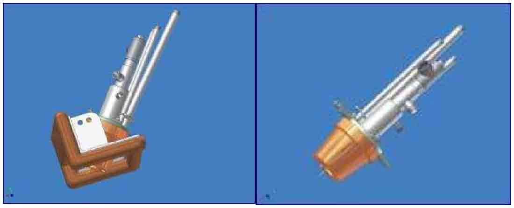
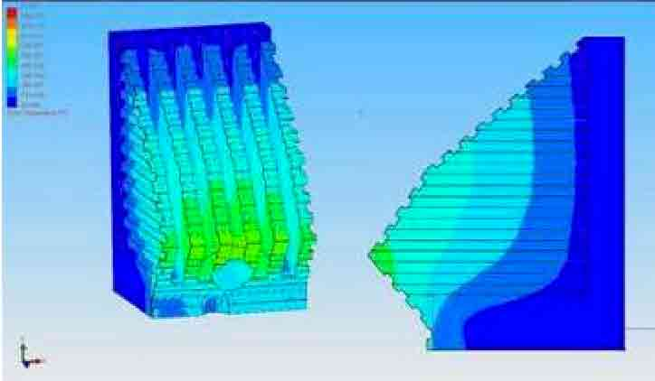

EAF Modeling
ACI has in-house mass and energy balance model (EAF Model), developed and validated over the course of more than 50 PyreJet™ and ALARC™-Jet systems start-ups. With the EAF Model, ACI sets up a base case via information taken from completed ACI EAF Questionnaires. Once the base case has been set up in the EAF Model, ACI equipment (PyreJet™, ALARC™-Jet, PyrOx™, and/or ALARC™- PC) is added to the model so a projected performance can be calculated. The projected performance is then compared against the base operating case to estimate the benefits provided by the ACI EAF equipment. An example of ACI’s EAF Model is shown in the figure below.

3-D Burner and Panel Modeling
ACI has a software program that allows for three-dimensional (3-D) design of copper water cooled panels, multi-function burners, and oxygen injectors. Through 3-D modeling ACI is able to optimize the design, mounting, and installation of their equipment before it is built or installed in the field. The 3-D modeling program is also very effective speeding up the innovation process of combustion equipment to meet ever changing challenges in the plant environment. An example of a PyreJet™ multi- function burner mounted in an experimental corner panel and a PyreJet™ in a copper water cooled combustor are shown in the figure below.
Heat Transfer Modeling
The success of copper water cooled panels in the EAF environment is heavily dependent on their ability to remove heat via a water cooling circuit within the panel. Therefore, it is very critical to be able to test and optimize a copper panels profile and water-cooling circuit layout before it is actually cast in the foundry. ACI is able to successfully accomplish this difficult task through the use of its heat transfer modelling software. Through the know-how of its panel design experts and the results of this heat transfer modelling software, ACI has successfully developed, patented, and installed numerous sidewall and EBT copper water cooled panels for PyreJet™, ALARC™-Jet, PyrOx™, and ALARC™-PC applications. An example of the results of the heat transfer modelling software is shown in the figure below.
Experimental Testing
In addition to various modelling tools, ACI also conducts real life experimental testing of its equipment before installing them at customer locations. ACI has tested all its burners and supersonic injectors at close to actual plant conditions to ensure maximum efficiency, highest reliability and state of the art safety performance.